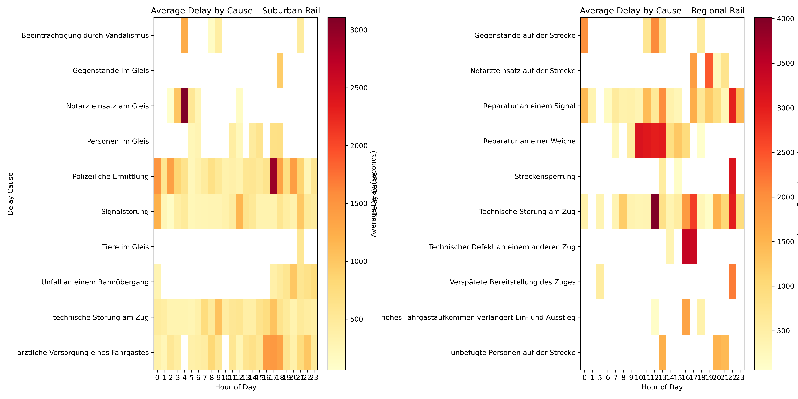

Project Overview
How Hamburg Moves explores the invisible rhythm of a city. Using real-world data from HVV transport systems, cycling activity, event schedules, and traffic sensors, we analyzed how Hamburg breathes — how movement changes by hour, by place, by purpose.
Over four weeks, we combined data analytics, machine learning, and visualization to uncover patterns behind congestion, events, and timing. Every chart below is a fragment of the city’s pulse — a window into its motion, its unpredictability, and its life.
The Visual Story
1. Predicting Crowds — Station Altona
This chart compares actual passenger data from Altona station with predictions generated by two machine learning models: XGBoost and Random Forest. The models were trained on features such as time, weekday, event proximity, and station identifiers.
The orange and blue curves nearly overlap, showing that the models captured Hamburg’s rhythm even during high-traffic Christmas week. This accuracy demonstrates the potential of predictive modeling in real-time passenger management, train scheduling, and capacity planning. The deviations that remain — the small peaks missed or overestimated — are the chaos of human behavior, the heartbeat of unpredictability in urban life.
.png)
2. When Events Change Everything
This visualization distinguishes between days with and without events. On event days, mobility patterns shift dramatically: typical commuter peaks double in size as thousands attend concerts or football games. The line showing event days spikes around 16–19h — the hours before performances begin.
This chart makes visible what we intuitively know but rarely measure: culture moves cities. Every event reshapes Hamburg’s pulse, causing ripples far beyond the stadiums or concert halls. Understanding this helps transit planners anticipate temporary overloads and manage resources more efficiently.

3. The City’s Heartbeat — Hamburg Heatmap
Each colored sphere represents one of the 15 key HVV stations, showing activity at noon on December 8. The color indicates intensity (from purple to yellow), and the size scales with passenger flow within a 1 km radius. Together, they form a living map of urban motion.
Bright yellow zones like Hauptbahnhof, Jungfernstieg, and Sternschanze pulse as the city’s arteries, while quieter purple nodes like Bergedorf or Harburg rest at the edges. This heatmap turns data into geography — showing how the city’s physical structure defines its flow of life.

4. Where Time Slows Down — Delay by Station
This plot compares the average delays across all transport modes — Metro, Suburban Rail, Regional Rail, and Bus — aggregated over two months. The bars reveal which stations and networks face chronic lateness.
Hauptbahnhof leads the delay statistics, its complexity turning into bottlenecks. Regional Rail networks suffer longer average delays, while metro systems experience more frequent but shorter slowdowns. Each transport type tells a story about infrastructure strain and urban design.
These findings offer a foundation for smarter delay management systems that prioritize the most critical bottlenecks.

5. Why Trains Run Late — Delay by Cause
Delays aren’t random — they have causes, patterns, and timing. This pair of heatmaps displays average delays by hour of day for the ten most frequent causes. For suburban lines, the mornings (6–9h) reveal clusters of medical emergencies and police interventions. For regional trains, delays peak in the afternoon due to signal failures and track maintenance.
This temporal fingerprint shows that different problems dominate at different times. These insights allow transport operators to forecast when and why disruptions are most likely, and to distribute maintenance and support teams more effectively.

6. Forecasting Accuracy — The Time Challenge
Here we evaluate how model accuracy changes with the forecast window. Predicting five minutes ahead is nearly flawless (low MAE and RMSE), but at one hour, deviations multiply. The reason is human unpredictability: the longer the horizon, the more randomness takes control.
In data science terms, this visual explains the boundary between order and chaos. In practical terms, it tells us that short-term forecasts can reliably power adaptive timetables, live passenger alerts, and energy optimization systems — but long-term predictions require continuous model retraining.

7. Peaks and Events — How Culture Moves the City
This final chart quantifies the relationship between events and mobility peaks. Nearly 80% of observed surges occur within 30 minutes of a cultural or sporting event. When Hamburg celebrates, the city literally moves faster.
On non-event days, the rhythm is calmer, the peaks softer — the city breathes slower. But during festivals or matches, waves of people synchronize their motion. This is where data meets sociology: movement becomes collective emotion, and the city becomes a shared heartbeat.

Insights & Reflections
From raw data to rhythm — we discovered that Hamburg’s movement is not random but structured, influenced by emotion, culture, and time. Our models show that human behavior can be measured, but never fully controlled.
This project demonstrates the potential of combining AI, visualization, and civic data to make mobility systems more responsive and humane. By understanding how a city moves, we learn how it lives.
The Team
Abdullah Al-Hakimi, Redwon Sagor, Saúl Sánchez, Dario Siegert, Nicola Ye
HAW Hamburg – Wintersemester 2025
Explore the Project
See the full models and notebooks — explore how data becomes movement.
Explore the Project →